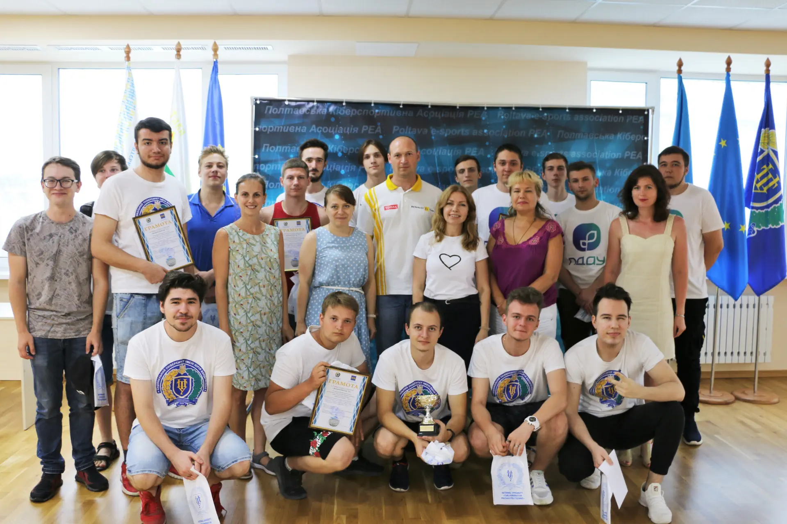

Студенти політехніки стали переможцями Відкритого турніру з кіберспорту «RectorsCyberCup‘21»
Студенти Національного університету «Полтавська політехніка імені Юрія Кондратюка» здобули переконливу перемогу на Відкритому турнірі з кіберспорту «RectorsCyberCup‘21», організованого університетом та громадською організацією «Poltava e-sports association» серед студентських команд полтавських закладів вищої освіти.